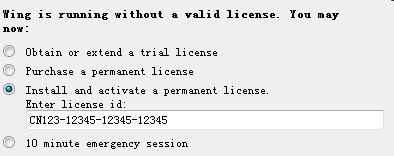
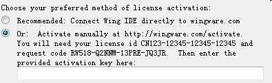
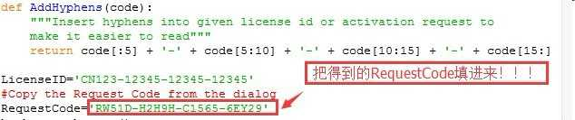

[Python]-2-Ubuntu中编译安装python环境
引言
默认情况下，ubuntu系统（16.04）已经安装了最基本的python组件，但功能并不完整，这篇文章介绍在ubuntu系统中如何完整的安装python环境，文章的后半段会介绍一款非常好用的python集成开发环境WingIDE。
文章目录
0×1.ubuntu中如何使用源码编译安装python环境
1）前往[python官方网站]Downloads页面，下载最新python源码，目前（2016）python有两个主要版本，python2和python3，两个版本之间并不兼容，请根据自身需求选择不同版本，本文以python3举例。
2）进入下载页面后，选择"Files"列表中的"Gzipped source tarball"选项，下载下来的会是一个.tgz压缩文件。
3）打开终端，切换到下载目录中，按照下面的方法解压缩完成安装：
#1.如果之前没有安装过编译组件，请先执行下面的命令，这会安装gcc，make，g++等编译所需组件 www@qingsword.com:~/$ sudo apt-get install build-essential #2.解压缩刚才下载的python源码压缩包（本文我将压缩包下载到了本机家目录中，如果你下载到了其他目录，请切换到对应目录中，本文完成时，最新的python版本为3.5.2） www@qingsword.com:~/$ tar -vxzf Python-3.5.2.tgz #3.进入目录编译安装 www@qingsword.com:~/$ cd Python-3.5.2 www@qingsword.com:~/Python-3.5.2/$ sudo ./configure && sudo make && sudo make test && sudo make install
0×2.WingIDE的安装与破解
WingIDE能够在windows，linux和macos上面运行，请根据自己的系统下载不同版本，本文使用ubuntu系统举例，破解方法同样适用于其他系统。
1）前往[WingIDE官网]下载最新的版本，本文完成时，最新版本为5.1.12，建议下载64位的deb包。
2）切换到下载目录，安装：
www@qingsword.com:~/$ sudo dpkg -i wingide5_5.1.12-1_amd64.deb
3）在ubuntu搜索键中搜wing，或在终端中输入wing[tab]（tab为键盘制表符按键，会自动补全wing版本号），运行wingide
4）WingIDE是收费软件，安装WingIDE成功后启动，激活时输入license id CN123-12345-12345-12345，然后下载这个py脚本用于计算激活码[百度网盘]
5）点击Continue后，拷贝"request code"，用文本编辑器打开刚才下载的py脚本文件，按照下图所示将"request code"填入对应区域：
 6）保存后，执行这个python脚本，得到激活码，将激活码填入上面图3的文本框中，完成激活
#请注意，不同的机器计算后的激活码不会相同，下面是我的机器上计算得到的激活码 www@qingsword.com:~/$ python CalcActivationCode.py The Activation Code is: AXX28-64XQX-G4Y6T-B691L
WingIDE功能十分强大，能够断点调试，单步跟踪，监控变量状态等等，使用方法与微软的vs十分类似。
Ps:在Ubuntu16.04中可能会遇到使用搜狗输入法在WingIDE中无法输入中文的情况，解决的方法是，找到/usr/bin/wing5.1(wing后的版本号可能不同)，使用管理员权限编辑这个文件，在第一行"#!/bin/bash"添加两行内容，操作如下：
www@qingsword.com:~$ sudo vim /usr/bin/wing5.1
#添加后文件内容如下
#!/bin/sh
#添加下面这两行
export XMODIFIERS="@im=fcitx"
export QT_IM_MODULE="fcitx"
WINGHOME="/usr/lib/wingide5"; export WINGHOME
. "${WINGHOME}/run-wing.sh"
重新启动wingIDE后，就能使用搜狗输入中文了。